Extract and Filter
The extract and filter step of the pipeline loads in the raw images, filters them and saves the resultant filtered images for each tile/round/channel combination as npy files.
It also adds the extract and
extract_debug NotebookPages to the Notebook.
If the extract and filter step of the pipeline bugs out halfway through for some reason, it can be re-run without needing to remake all the tiles already saved to the tile directory. It will just start with the first tile yet to be saved. The scale values must not be changed when re-running though.
Variables in extract page
auto_thresh
The extract NotebookPage contains the variable auto_thresh.
auto_thresh[t, r, c] is the threshold spot intensity for tile \(t\), round \(r\), channel \(c\) used for spot detection
in the find spots step of the pipeline.
auto_thresh[t, r, c] = config['extract']['auto_thresh_multiplier'] * median(abs(image))
image is the mid z-plane (nb.extract_debug.z_info) of the image saved to tile_dir for tile \(t\), round \(r\),
channel \(c\) during the extract step of the pipeline.
This is just saying that we expect median(abs(image)) to be the characteristic intensity of background pixels
and spot pixels should be much more intense that this.
These values can be viewed with the function thresh_box_plots:
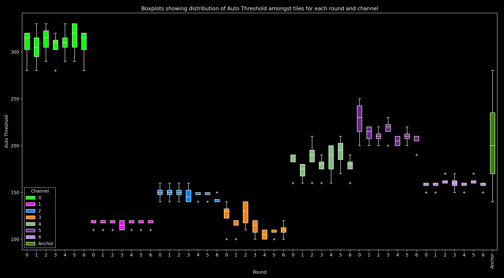
For each round and channel, this shows a box plot combining all tiles (i.e. a box plot of auto_thresh[:, r, c]).
For the anchor_round, only one channel (anchor_channel) is shown as it is the only one used on this round.
In this plot, we expect for a given channel, auto_thresh should be similar across all rounds and tiles (i.e.
boxplots of the same color should be at the same height, and they should have quite small ranges with any
outlier tiles (white crosses, +) not far from the boxplot).
hist_counts
The extract NotebookPage also contains the variable hist_counts.
hist_counts[i, r, c] is the number of pixels across the mid z-plane (nb.extract_debug.z_info)
of all tiles in round \(r\), channel \(c\) which had the value nb.extract.hist_values[i].
It is used for normalisation
(see Norm Button box here)
between channels in the call reference spots step.
The histograms can be viewed using histogram_plots.
Initially, this will show the hist_counts[:, r, c] vs hist_values for each round and channel.
There is also a Norm Button which
equalises the channels according to
config['call_spots']['color_norm_intensities']
and config['call_spots']['color_norm_probs']. In the normalised histograms,
most values will be between ±1.
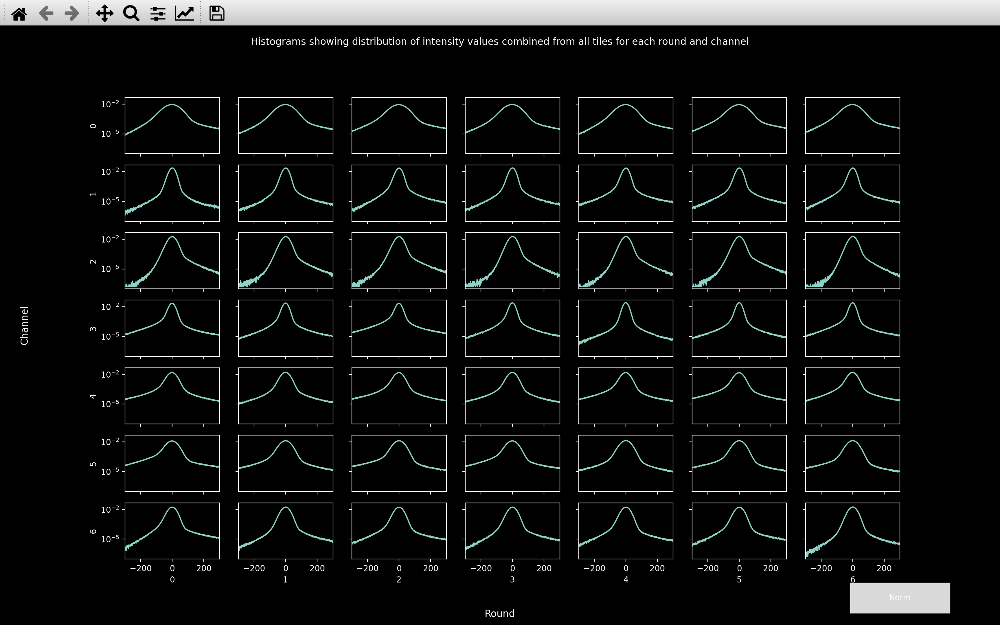
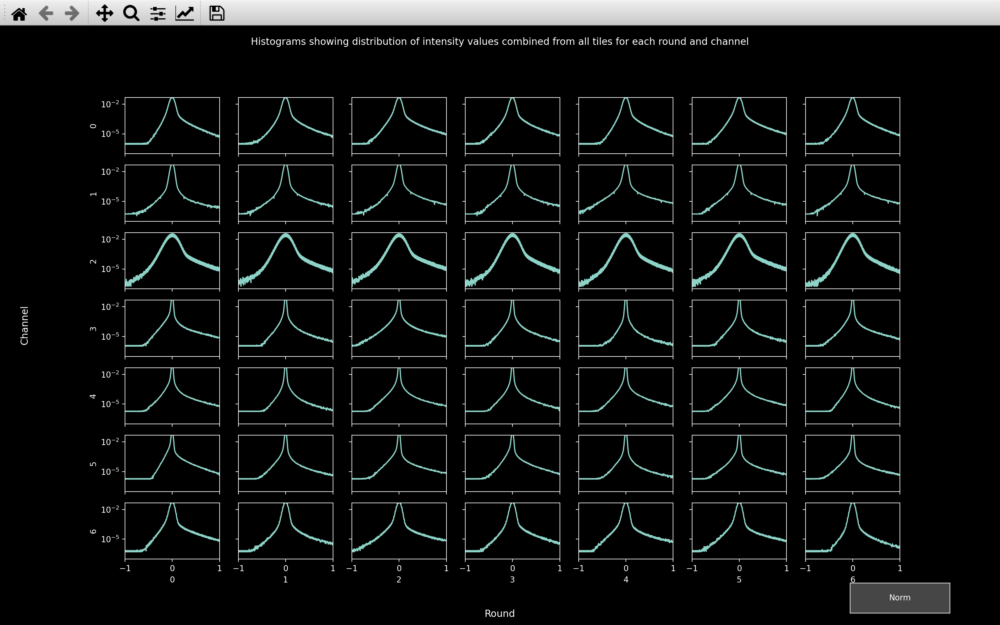
In the normalised histograms, we want to see a sharp peak at 0 accounting for the background pixels with a long tail to larger values accounting for the spot pixels and a tail to negative values accounting for the pixels in annuli surrounding spots.
So in this example, channel 2 will likely prove the most problematic because the peak centered on 0 is much wider than for any other channel. This indicates that there is quite a lot of variance in the background pixels, making it harder to distinguish the spots from the background.
Also, from the un-normalised histograms we can see that the peak centered on 0 is widest for channel 0.
Thus, the median of absolute values will be largest for this channel. This explains why auto_thresh
is significantly larger for channel 0 than any other channel.
Raw data
The raw data can be viewed using view_raw. It can either be called
for an experiment which already has a Notebook, or for one for which no code has been run yet, but the config_file
has been made:
from coppafish import Notebook
from coppafish.plot import view_raw
nb_file = '/Users/user/coppafish/experiment/notebook.npz'
nb = Notebook(nb_file)
tiles = [0, 1] # tiles to view
rounds = [3, 5] # rounds to view
channels = [1, 6] # channels to view
view_raw(nb, tiles, rounds, channels)
from coppafish.plot import view_raw
ini_file = '/Users/user/coppafish/experiment/settings.ini'
tiles = [0, 1] # tiles to view
rounds = [3, 5] # rounds to view
channels = [1, 6] # channels to view
view_raw(None, tiles, rounds, channels, config_file=ini_file)
This will open a napari viewer with up to 4 scrollbars to change tile, round, channel and z-plane. When any of these scrollbars are used, the status in the bottom left corner will indicate the current tile, round, channel and z-plane being shown (e.g. below, the round at index 0 is 3 and the channel at index 1 is 6).
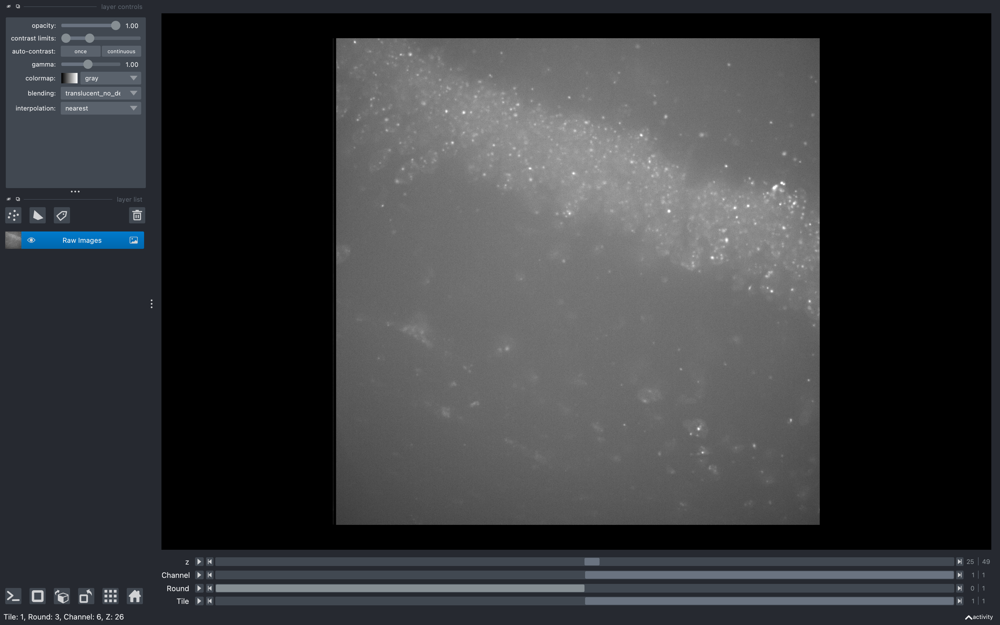
Using this tool before running the pipeline may be useful for deciding which z-planes to use.
For example, if say the first 10 z-planes don't show any clear spots, then removing them with
use_z in the basic_info
section of the configuration file would make the pipeline run much quicker,
especially in the omp and extract and filter sections.
Filtering
Once the raw images are loaded in, they are convolved with a 2D difference of hanning kernel.
Difference with 2D pipeline
If config['basic_info']['is_3d'] == False, before the convolution with the difference of hanning kernel,
the 3D raw data will be focus stacked so that
it becomes 2D.
Difference of hanning kernel
The difference of hanning kernel is made up by adding together a positive hanning window (yellow below) of radius \(r_1\) and an outer negative hanning window (cyan below) of radius \(r_2\) (typically twice \(r_1\)). It is normalised such that the sum of the difference of hanning kernel is 0. An example for a 1D version of the kernel with \(r_1 = 3\) and \(r_2 = 6\) is shown below:
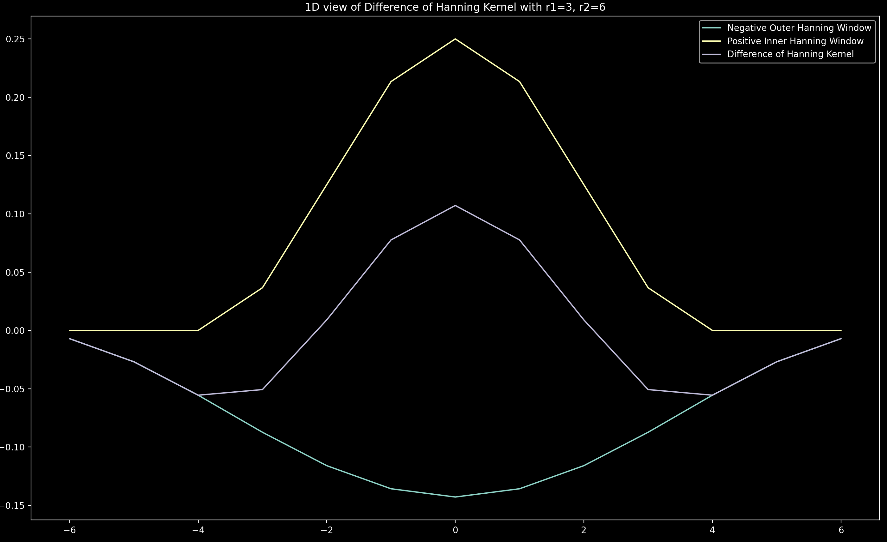
Conversion to 2D
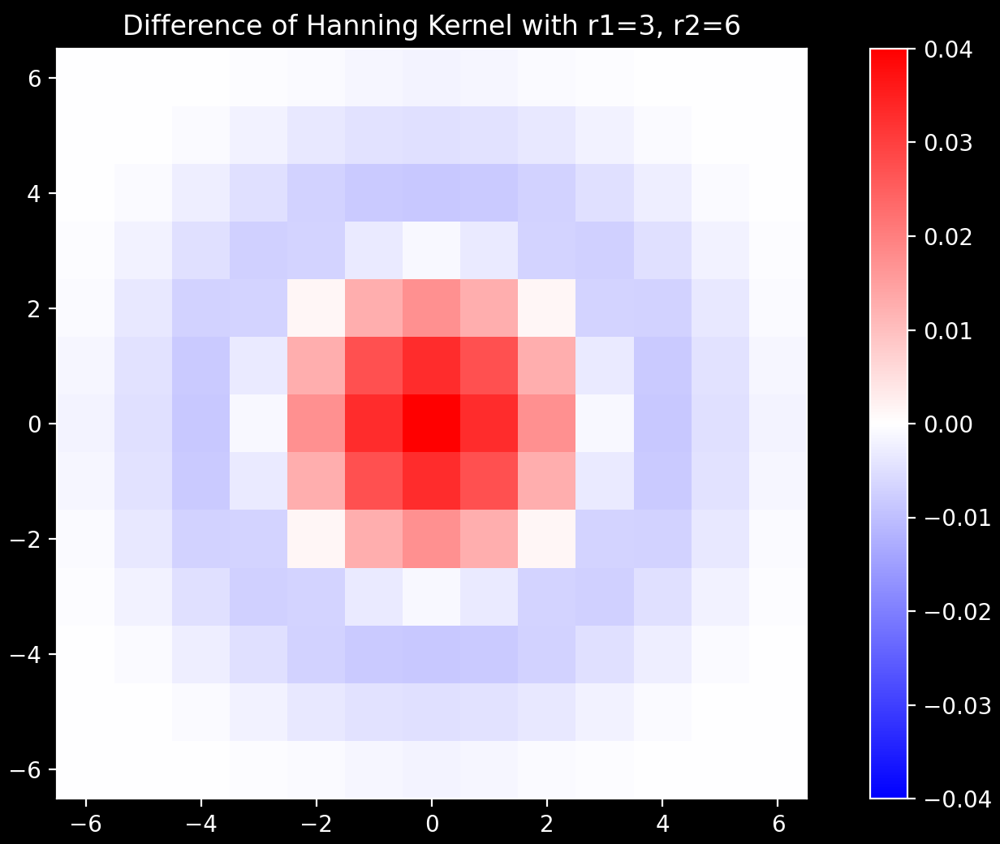
The 1D kernel shown in purple above is converted to the 2D kernel shown on the right via the
ftrans2 function.
In the pipeline, the value of \(r_1\) is set to config['extract']['r1']
and \(r_2\) is set to config['extract']['r2'].
If config['extract']['r1'] is not specified, it is converted to units of pixels from the micron value
config['extract']['r1_auto_microns'] (0.5\(\mu\)m typically gives \(r_1=3\)). If config['extract']['r2'] is not
specified, \(r_2\) is set to twice \(r_1\).
In general, \(r_1\) should be the typical radius of a spot in the raw image and \(r_2\) should be twice this.
Smoothing
After the convolution with the difference of hanning kernel, there is an option to smooth the image by applying
a correlation with an averaging kernel.
This can be included by setting the config['extract']['r_smooth'] parameter.
DAPI
For the dapi_channel of the anchor_round, convolution with the difference of hanning kernel is not appropriate
as the features that need extracting do not look like spots. Instead, tophat filtering can be performed by
setting config['extract']['r_dapi']. No smoothing is permitted.
Viewer
The purpose of filtering the raw images is to make the spots appear much more prominently compared to the background
i.e. extract the spots. We can see this effect and how the various parameters affect things with
view_filter.
This can be called in a similar way to view_raw:
from coppafish import Notebook
from coppafish.plot import view_filter
nb_file = '/Users/user/coppafish/experiment/notebook.npz'
nb = Notebook(nb_file)
t = 1 # tile to view
r = 3 # round to view
c = 6 # channel to view
view_filter(nb, t, r, c)
from coppafish.plot import view_filter
ini_file = '/Users/user/coppafish/experiment/settings.ini'
t = 1 # tile to view
r = 3 # round to view
c = 6 # channel to view
view_filter(None, t, r, c, config_file=ini_file)
This will open a napari viewer with up to 2 scrollbars. One to change z-plane and another to change the filter method. The filter method scrollbar can change between the raw image, the result of convolution with difference of hanning kernel and the result with smoothing in addition to this.
There are also up to 3 of the following sliders in the bottom left:
- Difference of Hanning Radius: This is the value of
config['extract']['r1']. Whenever this is changed,config['extract']['r2']will be set to twice the new value. - Tophat kernel radius: If
r == anchor_roundandc == dapi_channel, this slider will appear and refers to the value ofconfig['extract']['r_dapi']. - Smooth Radius YX: This is the value of
config['extract']['r_smooth'][0]andconfig['extract']['r_smooth'][1]. Both will be set to the same value. - Smooth Radius Z: This is the value of
config['extract']['r_smooth'][2]. When both this slider and the Smooth Radius YX slider are set to 1, no smoothing will be performed and the last two images in the filter method scrollbar will be identical.
Whenever any of these are changed, the filtering will be redone using the new values of the parameters and thus the last two images of the filter method scrollbar will be updated. The time taken will be printed to the console.
The 1D version of the current difference of hanning kernel can be seen at any time by pressing the h key.
Effect of Filtering
The images below show the effect of filtering with config['extract']['r1'] = 3, config['extract']['r2'] = 6
and config['extract']['r_smooth'] = 1, 1, 2:
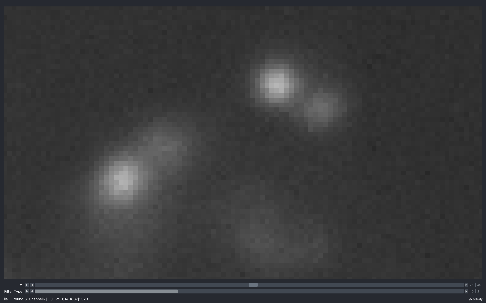
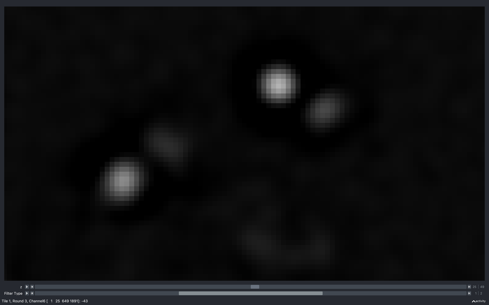
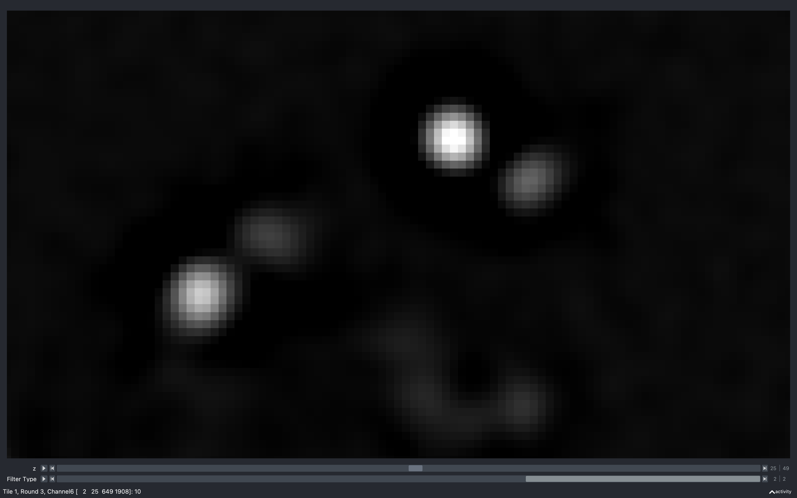
From this, we see that away from the spots, the raw image has a non-zero intensity value (around 300). After convolution with the difference of hanning kernel though, these regions become a lot darker (approximately 0). This is because the sum of the difference of hanning kernel is 0 so its effect on a background region with a uniform non-zero value is to set it to 0.
Looking at the spots, we see that the convolution helps isolate them from the background and separate spots which are close together. There is also a very dark (negative) region surrounding the spots. It is a feature of convolution with the difference of hanning kernel that it produces a negative annulus about spots.
Why negative annulus is expected
The convolution in the annulus of a spot is like the sum of the multiplication of the spot line (yellow) with the kernel line (cyan). This multiplication produces the purple line, the sum of which is negative.
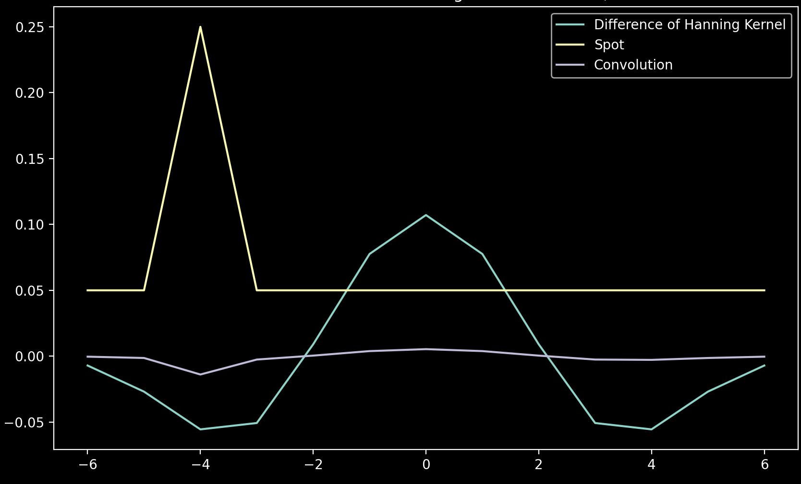
The smoothing in this example is only in the z direction (averaging over 3 z-planes: the one shown, 1 above and 1 below) and seems to emphasise the spots and the negative annulus even more. This is because on one of the neighbouring z-planes, the spot has a larger intensity than on the z-plane shown so averaging increases the absolute intensity.
Varying difference of hanning kernel radius
The plots below show the results of the convolution with the difference of hanning kernel for four different values
of config['extract']['r1']. In each case, config['extract']['r2'] is twice this value.


From this, we see that with \(r_1 = 2\), the background regions away from the spots appear less uniform than with \(r_1 = 3\), with quite a few patches of negative values. Also, the shape of the second spot from the left appears distorted. These both indicate that the kernel is wanting to extract features smaller than those of interest.
As \(r_1\) increases, we see that the negative annulus around the spots becomes larger and eventually at \(r_1=6\), the spots start merging together, indicating the kernel is wanting to extract features larger than those of interest.
Varying smoothing radius
The plots below show the results of the convolution with the difference of hanning kernel followed by smoothing
for four different values of config['extract']['r_smooth']. In each case, config['extract']['r1'] = 3 and
config['extract']['r2'] = 6.


From this, we see that smoothing in the z direction makes spots which appear most prominantly on other z-planes
appear much more intense in the z-plane shown. For example, the feature towards the bottom just to right of centre
is barely visible with r_smooth = 1, 1, 2 but is clear with r_smooth = 1, 1, 5.
We also see that the difference between the r_smooth = 1, 1, 2 and r_smooth = 2, 2, 2 plots is barely perceivable.
This suggests that the z averaging is more important, which makes sense, seen as the convolution with the
difference of hanning kernel is done in 2D, so treats each z-plane independently. In the r_smooth = 4, 4, 1 image
with no z-averaging, we see that the spots have more of a gradual increase in intensity instead of a sharp peak.
Scale
The filtered images produced are of float data type with negatives,
but they are saved to config['file_names']['tile_dir'] in uint16 format.
To do this conversion, the images are first multiplied by a scale factor so that they fill most of the uint16
range (between 0 and 65535) to keep the maximum amount of information. There are two different scale factors,
scale which is applied to all tiles and channels of the imaging rounds
(config['file_names']['round']) and scale_anchor which is applied to all tiles of
the anchor_channel of the anchor_round.
Potential error if scale changed
It is important that the value of scale used does not vary between tiles/rounds/channels as
it would affect the assignment of spots to genes. For example, if the value of config['extract']['scale']
was larger for round 2, channel 3, then spots will be more likely to be assigned to
genes which appear here according to their barcode in the code_book
(scale_anchor is allowed to differ from scale because the anchor_round is not used in gene assignment).
To stop this possibility, the values of scale and scale_anchor used
are saved to the config['file_names']['tile_dir']
in a text file (config['file_names']['scale']).
Then if these differ
from config['extract']['scale'] and config['extract']['scale_anchor'], an error will occur.
scale can be specified through config['extract']['scale'] but if this is empty, it will be
set
to:
scale = config['extract']['scale_norm']/max(scale_image)
scale_image is the
nb.basic_info.tile_sz x nb.basic_info.tile_sz raw image belonging to the channel and z-plane containing
the pixel with maximum intensity of the central tile (saved as scale_channel, scale_z, scale_tile in
nb.extract_debug) in round 0. It is then filtered/smoothed according
to the parameters in config['extract'] before being used in the scale calculation.
scale_anchor can be specified through config['extract']['scale_anchor']. If it is left empty,
it is computed in the same way as scale
(the channel used is anchor_channel and the tile and z-plane used are saved as scale_ancor_tile and
scale_anchor_z in nb.extract_debug).
After the tiles are multiplied by the scale factor, they still contain negative values, so
when they are saved, a shift
(config['basic_info']['tile_pixel_value_shift']) in intensity is added to each pixel.
This shift is then subtracted when the tiles are loaded.
Error - clipped pixels
Because scale is computed from one tile and round, there is a possibility during the course
of the extract step of the pipeline that a much more intense tile/round will be encountered such that
the pixel values will have to be clipped after scaling, to be kept within the uint16 range.
The number of pixels for which this happens on tile \(t\), round \(r\), channel \(c\) is saved as
nb.extract_debug.n_clip_pixels[t, r, c].
Clipped pixels can cause more spots to be detected in the find spots section of the pipeline, as shown below, so are best avoided:
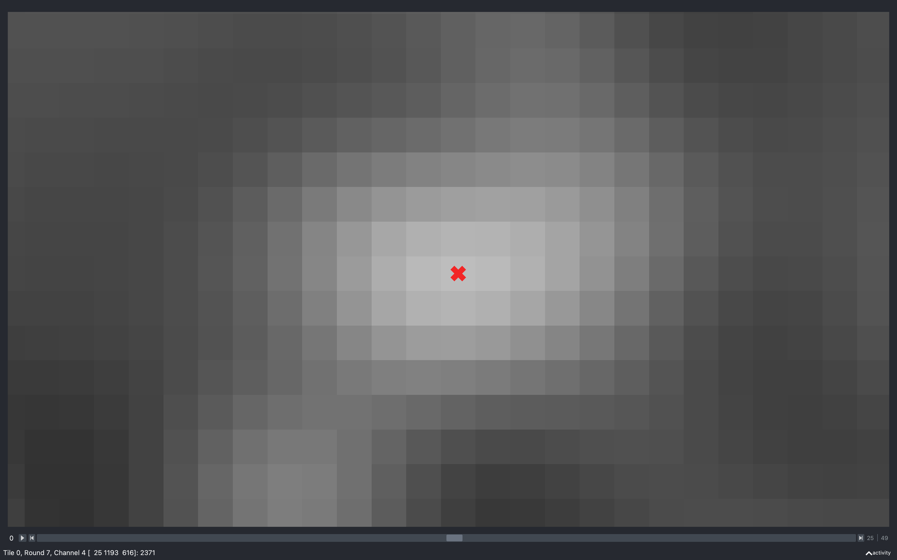
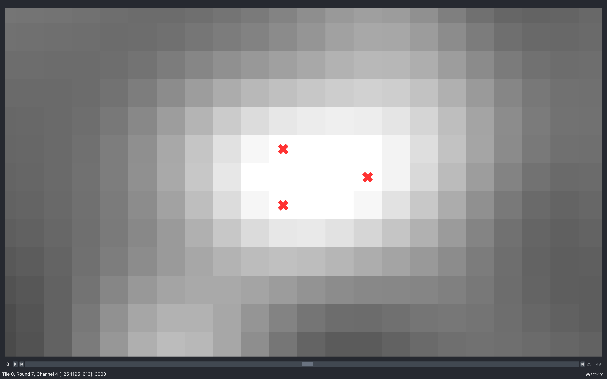
If more than config['extract']['n_clip_error'] (will be set to 1% of pixels on single z-plane if not specified)
pixels have been clipped for config['extract']['n_clip_error_images_thresh'] images,
an error will be raised stopping the extract section of the pipeline.
When this error occurs, a Notebook called notebook_extract_error.npz will be saved to the output directory
with the pages extract_fail and extract_debug_fail. nb.extract_fail.fail_trc records the tile, round, channel
where it terminated.
Solution
If the failed round, nb.extract_fail.fail_trc[1] is not the anchor_round, then delete everything in the tile
directory including the scale.txt file. Then set config['extract']['scale'] to new_scale and re-run:
scale_clip = nb.extract_debug_fail.clip_extract_scale
new_scale = scale_clip[scale_clip > 0].min()
This is the scale such that all tiles saved so far will not have any clipped pixels.
If the failed round, nb.extract_fail.fail_trc[1] is the anchor_round, then delete all .npy files belonging to
the anchor round in the tile directory as well as the scale.txt file.
Then set config['extract']['scale_anchor'] to new_anchor_scale and re-run:
anchor_scale_clip = \
nb.extract_debug_fail.clip_extract_scale[:, anchor_round, anchor_channel]
new_anchor_scale = anchor_scale_clip[anchor_scale_clip > 0].min()
This is the scale such that all anchor tiles saved so far will not have any clipped pixels.
Psuedocode
This is the pseudocode outlining the basics of this step of the pipeline.
for r in use_rounds:
for t in use_tiles:
for c in use_channels:
im = load image from raw data in input_dir
if 2D:
im = focus_stack(im)
if r is anchor_round and c is dapi_channel:
im = tophat_filter(im, dapi_kernel)
else:
im = convolve(im, diff_hanning_kernel)
im = im * scale
if smooth:
im = correlate(im, smooth_kernel)
Compute auto_thresh[t, r, c] and hist_counts[t, r, c] from
mid z-plane of im.
Save im to tile directory.
Add information needed for later stages of pipeline to extract NotebookPage
Add useful debugging info to extract_debug NotebookPage.
Return both.